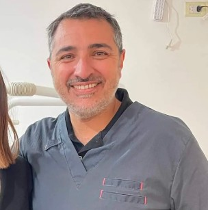

Especialidad
Prótesis fijas sobre implantes
Carga inmediata de arcos completos: colocación de prótesis en tiempos optimizados, sujeta a evaluación diagnóstica y factibilidad ósea de cada caso.
Prótesis fijas sobre implantes con carga inmediata. Recuperá estética y función masticatoria en tiempos optimizados según evaluación diagnóstica de cada caso, con planificación digital y atención personalizada.
Vista Flores, Valle de Uco
Nuestros servicios
Atención odontológica integral con tecnología digital y enfoque personalizado. Todo tratamiento comienza con una consulta de evaluación y diagnóstico clínico integral.
Carga inmediata de arcos completos: colocación de prótesis en tiempos optimizados, sujeta a evaluación diagnóstica y factibilidad ósea de cada caso.
Reemplazo de piezas dentarias ausentes con fijaciones de titanio biocompatibles, devolviendo firmeza, estética y salud oclusal.
Integración de herramientas digitales en diagnóstico y diseño para tratamientos más exactos, previsibles y confortables.
Estudio minucioso previo en software especializado para proyectar los pasos clínicos y el resultado antes de comenzar.
Planificación estética en armonía con las proporciones faciales y la biomecánica mandibular del paciente.
Recuperación funcional y estética integral mediante un plan secuencial adaptado a la salud bucal de cada persona.
Restauraciones de cerámica libre de metal para una estética natural, translucidez y ajuste anatómico preciso.
Alineación dental preventiva y correctiva con aparatología fija tradicional o alineadores según indicación clínica.
Tecnología de vanguardia
La odontología digital permite diagnosticar y planificar cada tratamiento con exactitud milimétrica, optimizando el confort del paciente y la previsibilidad del resultado.
Reemplazo de impresiones tradicionales molestas por capturas digitales precisas para una evaluación anatómica clara y cómoda.
Simulación previa del tratamiento para evaluar proporciones estéticas, funcionalidad masticatoria y expectativas antes de intervenir.
Piezas protésicas confeccionadas con estándares digitales que aseguran ajuste marginal, durabilidad y biocompatibilidad.
Estudio previo de la anatomía ósea para colocar los implantes dentales en la posición biomecánicamente óptima.
Casos clínicos
Casos clínicos documentados. Los resultados varían según el diagnóstico, condiciones biológicas y anatomía de cada paciente. Fotografías con fines exclusivamente informativos y consentimiento previo.
Simple y sin vueltas
En tres pasos simples coordinamos todo para que tu visita sea cómoda y sin complicaciones.
Mandanos un mensaje con tu consulta. Respondemos en horario de atención.
Escribir ahoraElegimos juntos el día y horario que mejor te quede dentro de nuestro horario de atención.
Mañana: 8:30 – 12:30 hs
Tarde: 15:00 – 19:00 hs
Vení a nuestra clínica en Vista Flores. El Od. Esper y su equipo te atienden con tiempo y dedicación.
San Martín 196, Vista FloresDudas habituales
Información clara y transparente para tomar decisiones con seguridad sobre tu salud bucodental.
La carga inmediata está indicada en pacientes con adecuada cantidad y densidad ósea y buen estado de salud bucal y general. Cada caso requiere una evaluación diagnóstica minuciosa con estudios clínicos y tomográficos previos para determinar si es viable o si conviene un protocolo convencional en dos etapas.
Es el punto de partida esencial. El odontólogo examina integralmente la boca, las encías y las piezas presentes, analiza los estudios radiográficos y conversa sobre tus expectativas y dudas. Con estos datos se planifican las opciones de tratamiento más convenientes para tu caso.
El procedimiento se realiza bajo anestesia local. En el postoperatorio se indican analgésicos y cuidados específicos, y la recuperación varía según cada caso.
Depende de la complejidad de cada situación. En casos seleccionados de carga inmediata es posible fijar dientes funcionales el mismo día. En otros casos se respeta un tiempo de osteointegración de unos meses para garantizar la máxima durabilidad y estabilidad ósea del implante.
Atendemos con turno coordinado previamente para dedicarle a cada paciente el tiempo necesario. Podés escribirnos directamente a nuestro WhatsApp (+54 9 2622 50-3823) para coordinar el día y horario que mejor te quede.

Responsable clínico
Especialidad: Implantes dentales, Rehabilitación oral
El Od. Jorge Esteban Esper es el profesional a cargo de Esper Odontología Mendoza. Su labor clínica está enfocada en la rehabilitación oral, la odontología estética y la colocación de prótesis fijas sobre implantes mediante herramientas de planificación digital.
Con consultorio en Vista Flores (Valle de Uco), prioriza un trato personalizado y cercano donde cada diagnóstico se evalúa con rigurosidad médica, explicando con claridad cada etapa del tratamiento para devolver función masticatoria, confort y estética.
Contacto directo
Escribinos por WhatsApp o encontranos en nuestra clínica de Vista Flores, Valle de Uco.
Dirección
San Martín 196, Vista FloresHorarios (con turno)
Lun – Vie: 8:30–12:30 y 15:00–19:00 hs